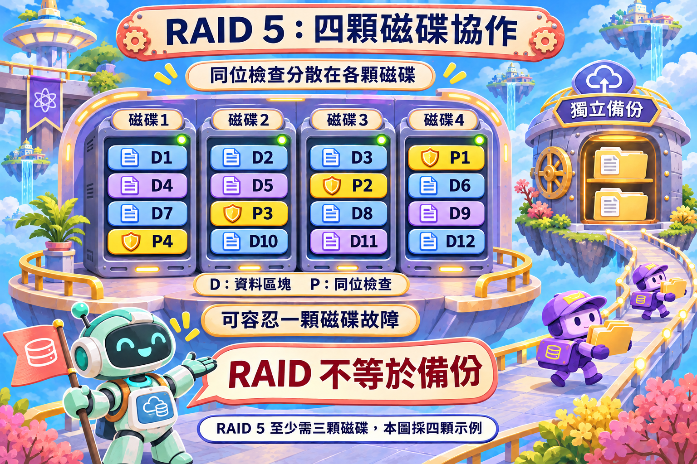

第 01 頁
啟動你的數位探索
學習目標：說出OS的任務、看懂基本網路圖，並解釋網頁如何到達你的裝置。
每頁各一張圖解，另有三張補充圖。點選圖片可看原圖，點選主題可進入互動課程。
明亮的科普漫畫與機器人陪你理解概念。場景與角色是教學比喻，請搭配文字與操作一起探索。
學習目標：說出OS的任務、看懂基本網路圖，並解釋網頁如何到達你的裝置。
硬體提供實體能力，軟體安排如何使用這些能力。
瀏覽器是應用軟體；Windows、macOS和Linux發行版是常見的作業系統環境。
概念路徑：使用者提出需求 → 應用程式 → 作業系統與驅動程式 → 硬體。
先有韌體和載入程序，才有作業系統提供的操作環境。
能用自己的話解釋原因，比只記住名詞更有幫助。
排程分配的是執行機會；本頁以單核心輪流處理的簡化模型示範。
記得儲存修改；關閉程式與解除安裝是兩件不同的事。
找檔案時，同時確認資料夾位置、檔名與檔案類型。
GUI與CLI是操作介面；CLI不代表這台電腦沒有作業系統。
先確認「這個功能為什麼需要它」，再決定給不給權限。
找對資源和操作，才比較能解決實際問題。
先確認任務與相容性，再判斷哪種系統環境合適。
排查設備問題時，依序看電源、連線、設定、相容性與驅動支援。
多工需要OS協調資源；視窗沒有顯示在最前面，工作仍可能進行。
重要檔案保留另一份可恢復的副本，並定期確認真的能開啟。
「免費下載」不是任意修改、轉售或散布的保證；要看授權。
用「需求、相容性、來源、恢復方式」檢查自己的數位選擇。
網際網路提供連結；WWW是建立在這種連結上的網頁服務。
Wi-Fi描述無線連線方式；Internet描述許多網路連起來的全球網路。
記住三個角色：LAN內轉送、網路間轉送、無線接入。
網路按規則搬運小單位資料；可靠與依序傳送需要相應的協定機制。
IP主要幫助網路間路由；MAC主要用於所在的區域連線。
把網路畫出來，再標出每個設備和每段連線的工作。
協定像團隊的共同約定；分層合作讓複雜通訊能被拆開理解。
DNS處理名稱查詢；取得IP後，仍需要可用連線和網站服務。
URL包含多個部分；DNS通常解析其中的主機名稱，而非整串路徑。
雲端是透過網路使用遠端資源；可用性與權限仍需要管理。
頻寬看資料量，延遲看等待；模擬數字只用來比較，不是實測結果。
HTTPS有助於連線安全；網址、內容與要求仍要分別查證。
用一條完整敘述，把「瀏覽器、OS、網路設備、DNS、網站伺服器」連起來。
這是其中一種簡化有線路徑；真實網路可能整合設備或增加多個節點。
先收集線索，再逐層查；不要把一個現象直接當成唯一原因。
答完後查看回饋，再用回顧頁補強需要練習的概念。
每次回顧抓住一個重點：分清角色，再連起流程。
延伸小任務：畫出你在家開啟學校網站的路徑，標上OS、Wi-Fi或網路線、路由器、DNS與伺服器。
CPU 處理通用運算與複雜控制，GPU 適合大量相似運算並行，兩者合作且不代表 GPU 每項工作都較快。

RAID 5 四顆磁碟的示例：每個資料條帶有三個資料區塊與一個同位檢查區塊，同位檢查分散在各碟；獨立備份另存舊版本。
具狀態追蹤防火牆依IP、協定、連接埠與連線狀態判斷流量；允許的請求及對應回應可通過，不符合規則的流量被阻擋。